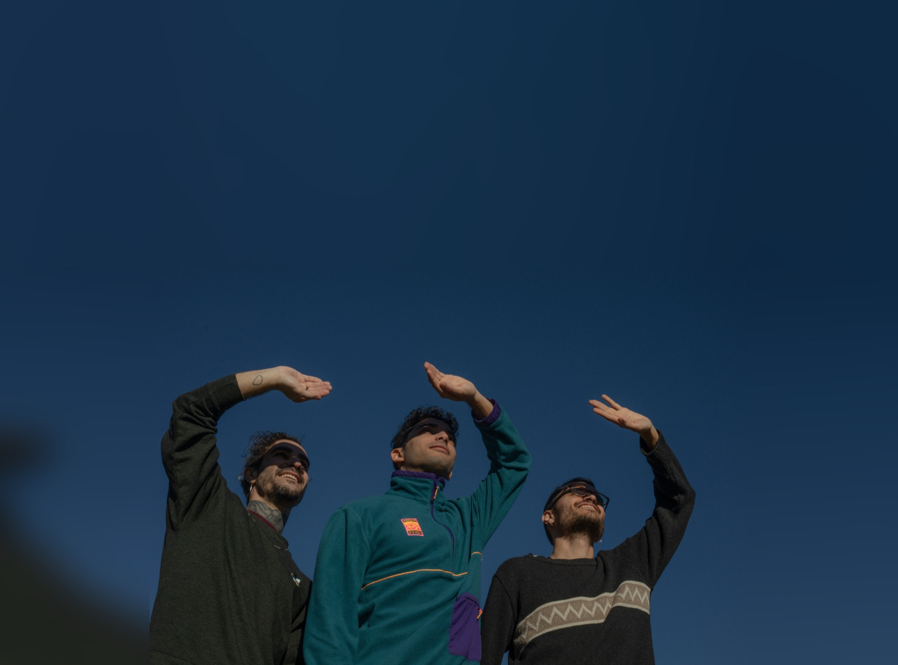

Som un grup bastant fràgil i absurd que intentem anar fent música superpop amb un mode animal per no caure a l'abisme 🦣

aquí hi ha la nostra música
aquí ens pots trobar a nosaltres
i si ens vols contactar per que vinguem a tocar,és aquí
Ens veiem aviat!
aquí ens pots trobar a nosaltres